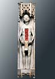
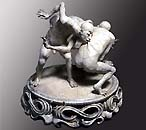
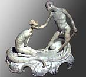
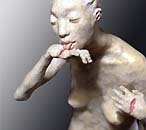

| Justin Novak
American ceramic sculptor.

American
ceramist Justin
Novak received a BFA in Communications Design (Illustration)
from the Pratt Institute, New York in 1983 and an MFA in 1996 from
the State University of New York (SUNY), New Paltz, where he taught
from 1997-2000. He has been Assistant Professor of Ceramics at the
University of Oregon, Eugene since 2000.
He was an invited artist-in-residence at the International Ceramic
Center in Skaelskor, Denmark in 2001 and at the Watershed Center,
Newcastle, Maine in 2003. He has also been visiting guest artist
at several institutions including the Parsons School of Design (2002),
The Ohio State University (2003) and the Rhode Island School of
Design (2003).
Novak has won several awards and grants, among them an Oregon Arts
Commission Visual Arts Fellowship in 2001 and a John Michael Kohler
Arts Center residency award in 2004. HIs raku-fired expressive figurative
sculpture navigates a fine line the between the tasteful and the
grotesque, while subverting the historical genre of the figurine,
e.g. with his ‘disfigurine’ series, in which physical
wounds such as bruises and lacerations serve as metaphors for injury
to self-esteem and other psychological harm.

Artist Statement (excerpt)
"The historical role played by the ceramic figurine has been
an embodiment of mainstream, bourgeois ideology, and for this reason,
I employ it in the presentation of an alternative vision; an ironic
anti-figurine, or 'disfigurine'. This subversion of the genre provokes
a reexamination of the promotion of conformism manifested in the
traditional figurine, particularly as a behavioral model regarding
class and gender".
"The
fine line that exists between the tasteful and the grotesque is
precisely the course that I strive to navigate. It is in the haunting
tension between the two that seduction and repulsion inhabit the
same space, where 'taste' is perhaps suspended, and the politics
of these shiny white aesthetics are laid bare".
"The psychological and the sociological realms are here inextricably
interwoven. This body of work represents an inquiry into the power
of culturally inherited values, codes of conduct, and identity".
Images and statement ©
Justin Novak, http://darkwing.uoregon.edu/~jnovak/,
.
More Artists of the Week
More Articles
|
{kind=link}
{kind=link}
{kind=link}
{kind=link}